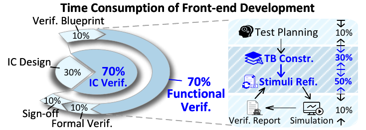
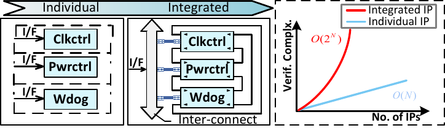
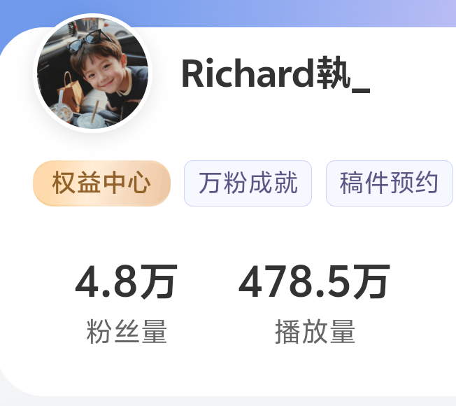
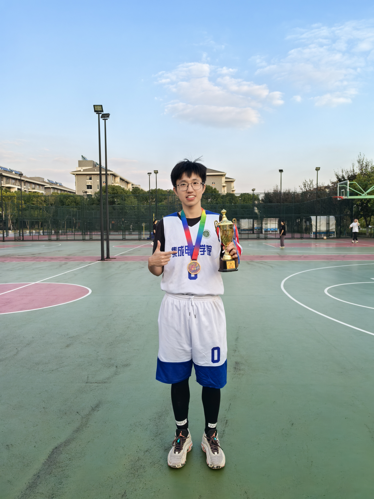

Worked on LLM-aided automation for UVM-based RTL verification, including testbench and stimulus generation. The workflow was integrated as a verification tool in ChatDV (project note), enabling end-to-end small IP-level UVM verification, reducing verification time to hours with a 20x speedup.

About Junhao Ye
Hi! I am Junhao Ye (叶俊豪), a Ph.D. candidate in the School of Integrated Circuits at Southeast University, advised by Prof. Zhe Jiang. I received my B.S. in Microelectronics Science and Engineering from Shenzhen University, ranking 1/103 in the comprehensive evaluation.
My research focuses on AI for Electronic Design Automation (EDA), especially LLM-aided RTL verification. I study UVM-based automation spanning testbench and stimulus generation, simulation feedback and refinement; assertion generation; and SoC security detection.
I have published 4 papers at the leading EDA conferences ICCAD and DAC. I am also a research intern at the National Center for Technology Innovation in EDA, where some of my research work has been integrated into ChatDV to support end-to-end automated UVM verification for small IPs. I have received the National Scholarship, Excellent Star of SZU, and Jicui Graduate honors.
你好！我是叶俊豪，东南大学集成电路学院博士生，师从江哲教授。本科毕业于深圳大学，专业排名 1/103。我的研究聚焦 AI for EDA，重点关注以 UVM 为核心的自动化验证闭环。
News 最新动态
- 07 / 2026Our team placed second at Hack@DAC 2026! [Report]
- 07 / 2026SmartCraft was accepted by ICCAD 2026! [Publication]
- 07 / 2026Attended DAC 2026 in Long Beach, USA and gave a presentation.
- 04 / 2026FEATUREDInvited as one of the speakers to give a tech talk to Apple's European hardware team.
- 02 / 2026UVMarvel was accepted by DAC 2026 — my first CCF-A conference paper! [Publication]
- 12 / 2025Passed the PhD-track defense with the highest score, officially transitioning to a Ph.D.
- 11 / 2025Attended ICCAD 2025 in Munich, Germany and gave a presentation.
- 09 / 2025Received an A+ in the lab's annual evaluation and was awarded “Jicui Graduate” (集萃研究生).
- 07 / 2025UVM² was accepted by ICCAD 2025 — my first first-author paper! [Publication]
- 02 / 2025UVLLM was accepted by DAC 2025! [Publication]
- 07 / 2024Invited to speak as a representative of the college's undergraduate graduates. [Report]
- 06 / 2024Awarded the Honors Bachelor's Degree（荣誉学士） by Shenzhen University.
- 06 / 2024Awarded the Outstanding Graduate（优秀毕业生） honor by Shenzhen University.
- 12 / 2023FEATUREDReceived the "Excellent Star of SZU"（荔园卓越之星）, the highest honor for undergraduate students at Shenzhen University, ranking 4th among 29,000 undergraduates (top 0.0138%)! [Report]
- 09 / 2023Ranked 1st among 103 students in the comprehensive evaluation and earned a recommendation for graduate study at Southeast University.
- 09 / 2023Received the National Scholarship（国家奖学金）, the highest honor for undergraduate students.
Research Background 研究背景
As agile hardware development speeds up modern SoC iteration, verification has become the dominant front-end bottleneck, consuming nearly 70% of the cycle. My research explores LLM-aided RTL verification to address this challenge.
Verification is the dominant front-end bottleneck

Verification complexity grows with subsystem integration

THREE DIRECTIONS
01LLM-aided RTL verification in three directions.
UVM Verification
UVM automation from modules and IP blocks to subsystems and SoCs, spanning testbench and stimulus generation.
Assertion Generation
Automated assertion generation from design intent, enabling continuous checking across the verification flow.
SoC Security Analysis
Security analysis and detection for SoCs, strengthening trustworthy system-level verification.
Publications 论文
Selected peer-reviewed work. My name is in each author list.
-
ICCAD 2026 · International Conference on Computer-Aided Design CCF-B · EDA Top Conference
-
 DAC 2026 · Design Automation Conference CCF-A · EDA Top Conference
DAC 2026 · Design Automation Conference CCF-A · EDA Top Conference -
 ICCAD 2025 · International Conference on Computer-Aided Design CCF-B · EDA Top Conference
ICCAD 2025 · International Conference on Computer-Aided Design CCF-B · EDA Top Conference -
 DAC 2025 · Design Automation Conference CCF-A · EDA Top Conference
DAC 2025 · Design Automation Conference CCF-A · EDA Top Conference
Education 教育经历
 Southeast University · 东南大学Graduate study (M.S. → Ph.D.) · Advisor: Prof. Zhe Jiang
Southeast University · 东南大学Graduate study (M.S. → Ph.D.) · Advisor: Prof. Zhe Jiang Shenzhen University · 深圳大学B.S. in Microelectronics Science and Engineering
Shenzhen University · 深圳大学B.S. in Microelectronics Science and Engineering
Research Intern 实习经历
Competitions 学科竞赛

2026
Second Place · Hack@DAC 2026
Our team placed second in the Hack@DAC 2026 competition.
ABOUT HACK@DAC
Hardware Security Challenge
Hack@DAC is a hardware-security challenge co-located with DAC. Teams identify security-critical hardware and firmware vulnerabilities, demonstrate exploits, and propose mitigations.
Learn more ↗
2023
National First Prize
Undergraduate IoT Design Contest (Huawei Cup)

2023
National Second Prize
Blue Bridge Cup

2023
National Third Prize
National IC Innovation and Entrepreneurship Competition

2022
Guangdong First Prize
Electronics Design Contest
Awards 荣誉
- Jicui Graduate（集萃研究生）2025
- Outstanding Graduate（优秀毕业生）2024
- Honors Bachelor’s Degree（荣誉学士）2024
- Excellent Star of SZU（荔园卓越之星）2023
- National Scholarship（国家奖学金）2023
Media Highlights 媒体报道
SHORT FILM · 02:00
Excellent Star of Liyuan · Personal Profile
A two-minute portrait produced during my undergraduate years at Shenzhen University, covering study, research, teaching, campus life, and service.
Beyond Research 研究之外
Outside research, I keep life wide through service, storytelling, visual work, and sport.
PUBLIC OUTREACH

CREATOR
Bilibili UP Creator
I independently produce digital- and analog-circuit courses on Bilibili. The series has received over 4.7 million views, helping 10,000+ students prepare for final exams and graduate-school entrance exams.
Visit my channel ↗VISUALS
Photography / Vlog
I love traveling and photography, and I also create travel vlogs and update several channels, including “The Real Life of a Chinese Student in the U.S.”
Visit my channel ↗COMMUNITY & LIFE

SERVICE
Volunteer Activities
I am a member of the Communist Party of China and a Guangdong three-star volunteer, the highest level. I have donated blood and completed more than 640 hours of service in libraries, hospitals, event venues, and more.

MOVEMENT
Sports
I have been an NBA fan for over 10 years, and I enjoy basketball and fitness. I also won the department championship in the freshman basketball cup as the starting point guard, capturing a long-awaited title and fulfilling a dream I had held since my school days!